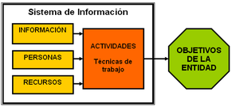
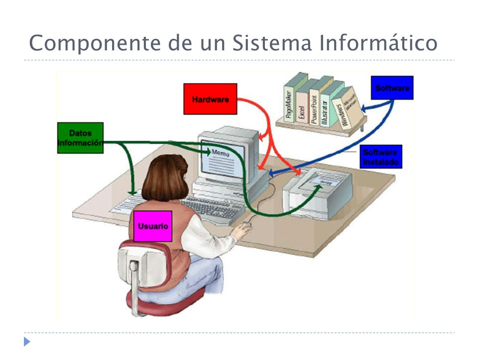
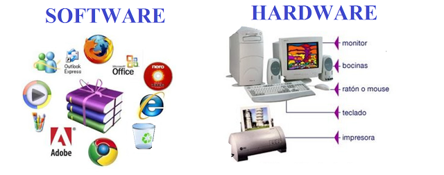
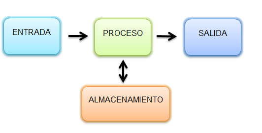

Sistema de información
Un sistema de información: es un conjunto de elementos que interactúan entre sí con el fin de apoyar las actividades de una empresa o negocio

Un sistema de información automatizado: es un conjunto de elementos informáticos y humanos que interactúan entre sí con el fin de apoyar las actividades de una empresa o negocio.

El equipo computacional: el hardware y el software necesarios para que el sistema de información pueda operar.

El recurso humano que interactúa con el Sistema de Información, el cual está formado por las personas que utilizan el sistema.

- El programador quien realizó el sistema
- El administrador encargado de operar, las transacciones más sensibles en cuanto a seguridad
- El usuario final: quien más se relaciona directamente con el sistema
Un sistema de información realiza cuatro actividades básicas: entrada, almacenamiento, procesamiento y salida de información.
